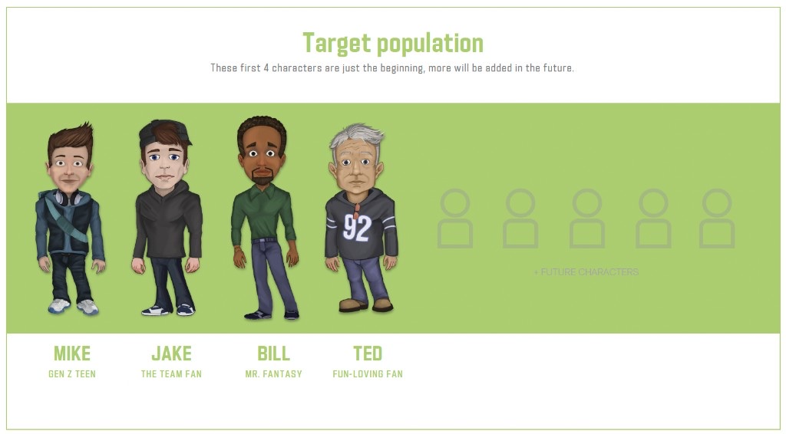
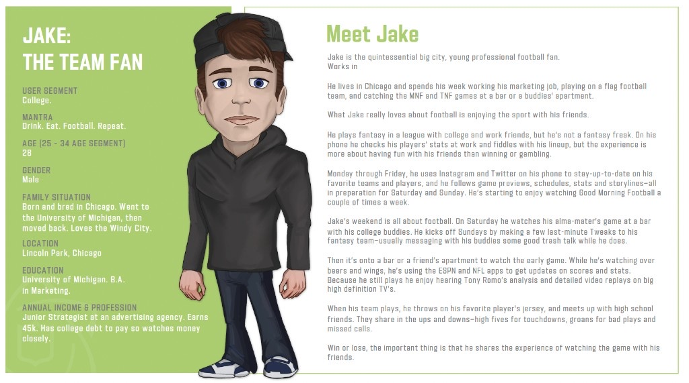
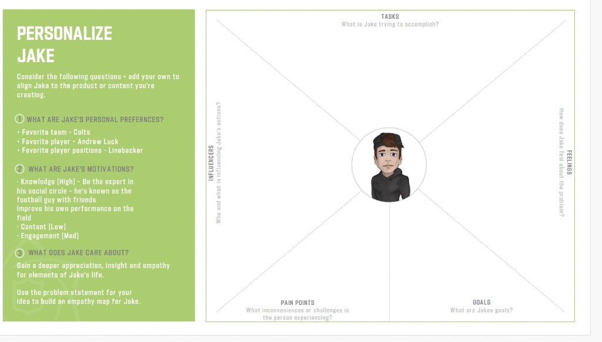

Engagement lift from Fantasy App & 5G/AR research: 25% increase
Retention from Fantasy App & 5G/AR research: 18% increase
Super Bowl LX attendees who used SuperStadium: 59.6%
Value of the Verizon–NFL technology partnership: $1B+
SuperStadium / VIP fan experience walkthrough—multi-angle viewing and AR overlays in the NFL app.
Intel studio → fan personas & prototypes





Executive summary
I directed UX research for the NFL Fantasy App and partnered with Verizon on 5G/AR fan-experience field research—pairing cognitive task analysis with wearable biometric telemetry during live events—and prototype evaluation on immersive AR hardware. That work, seeded in part by an earlier Intel TrueView design studio, formalized into SuperStadium and achieved a 25% engagement lift and 18% higher retention.
Situation
The Fantasy app remained a free flywheel into the main NFL ecosystem, while Labs pursued next-generation live and in-stadium engagement with partner technology. Intel’s TrueView technology let fans change visual perspective on recorded games—relevant to GamPass and condensed replays—and the league needed to know whether fans wanted that capability, how they would use it, and how to market it by fan type.
Task
Direct UX research for the NFL Fantasy App while partnering with Verizon on 5G/AR fan-experience field research—and run design studios around the Intel prototype to deliver personas and a concrete proposal for enhancing the live game experience.
Approach
- Fantasy App UX research — Directed research on Fantasy product experiences that informed engagement and retention interventions alongside Labs partner work.
- Intel design studio — Generative ideation with fans against working Intel prototypes; built NFL fan personas (e.g., Mike, Jake, Bill, Ted) and an empathy-map method so teams could personalize concepts to each archetype.
- Live-game proposal — Primary studio outcomes were the personas and a proposal to enhance the live game experience—which NFL Labs formalized and largely seeded into the Verizon 5G SuperStadium program.
- Verizon field research with biometrics — Paired cognitive task analysis with wearable biometric telemetry during live events, plus prototype evaluation on immersive AR hardware with Verizon’s innovation team.
- Product shape — SuperStadium became an interactive AR feature inside the official NFL mobile app: up to 7 live/replay camera angles in-stadium (5 from home), Next Gen Stats AR overlays, live stats, play tracking, and in-stadium navigation—powered by Verizon 5G Ultra Wideband.
Outcome
- Engagement & retention — Fantasy App and Verizon 5G/AR research achieved a 25% engagement lift and 18% higher retention.
- Still in market — SuperStadium remains in current use as an embedded NFL app feature and a cornerstone of Verizon’s landmark 10-year, $1 billion+ technology partnership with the NFL (signed 2021).
- Super Bowl LX (2026) — 59.6% of the 70,823 attendees were actively connected to the SuperStadium experience.
- Attribution — I directed Fantasy UX research and early Verizon usability/prototype evaluation, and helped formalize the Labs concept that grew out of the Intel studio; I left for FanDuel before the full commercial partnership and later VIP product evolution landed.